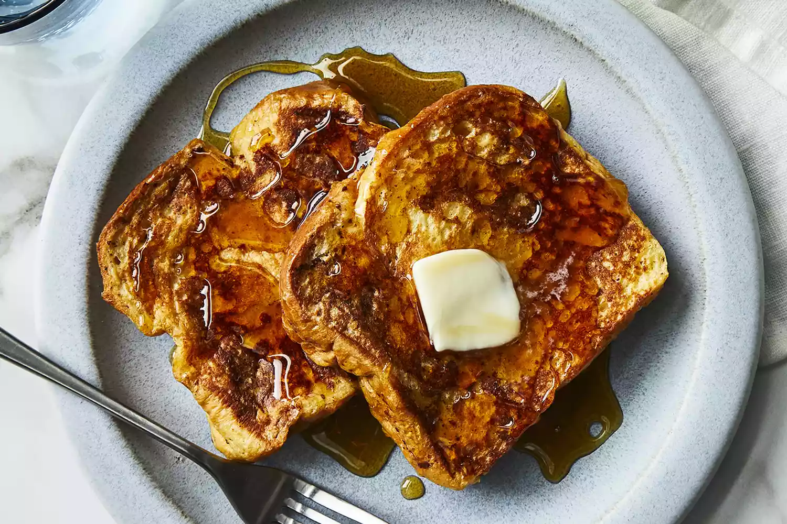

French Toast

French Toast Recipe for Easter Weekend Party
Take a break from the candy and dig in to these craveable casseroles. Packed with in-season spring
ingredients (asparagus, eggs, mushrooms — the gang's all here) and easily prepped-ahead, these one-pan
recipes are the ultimate solution for a busy holiday morning. That way you can enjoy every moment of the
Easter egg hunt! From sweet Blueberry French Toast to savory Biscuits and Gravy, there's sure to be
something for everyone in the family.
Ingredients
- 6 thick slices bread
- 2 eggs
- 2/3 cup whole milk or half-and-half
- 1 pinch of salt
- 1 teaspoon vanilla extract (optional)
- 1/4 teaspoon ground cinnamon (optional)
Cooking Steps!
- Prepare the custard. Whisk together the eggs, milk, and flavorings until completely
blended. Use a large bowl wide enough to dip the bread in. You can also pour the whipped custard into a
baking dish for easy dipping.
- Heat a skillet or griddle over medium heat. You want it to be hot enough to form a crust
when the custard-coated bread hits the pan, but not so hot that the crust burns before the custard that's
soaked into the bread has a chance to cook.
- Dip the bread in the custard, turning it to coat completely on both sides. The dryer or
sturdier your bread, the longer it can soak. Melt 1 or 2 tablespoons butter in the hot skillet. Depending on
how large your skillet is, place one or two slices in the hot butter. Cook until golden brown, then turn
over to cook on the other side. You can keep the slices warm on a rack in a 350º F oven until the rest of
the toast is cooked.